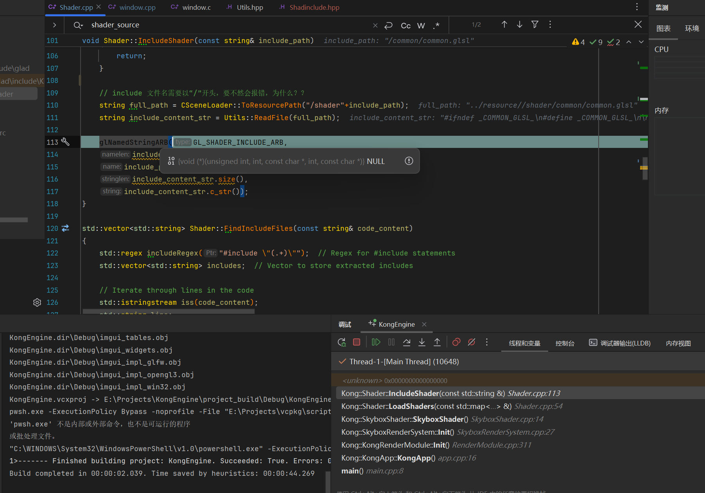
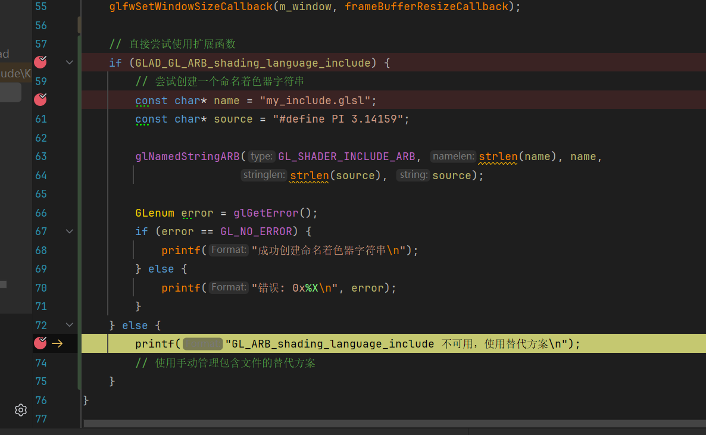
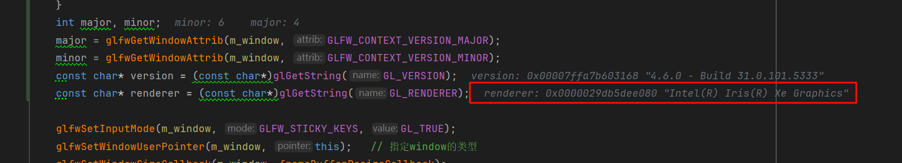
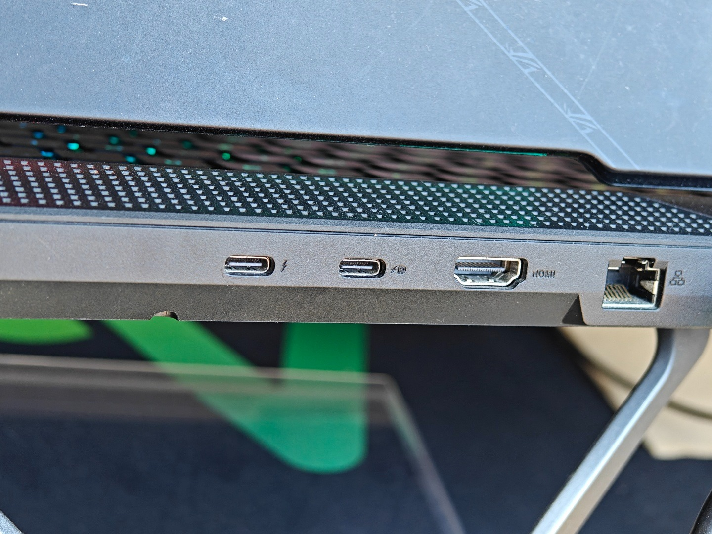
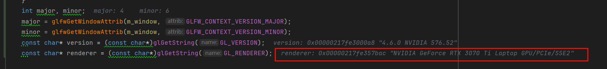

记一个关于外接显示器接口的乌龙
今天发生了一个让我又好气又好笑的乌龙。
周六一大早起来，在B站上看到一个关于地形的shader优化方法，感觉很有意思。于是乎放弃了打游戏的计划，想把这个技术在KongEngine上实现一下。
我的KongEngine现在有两个主要的分支，一个是主分支master，是一个比较稳定了的主要基于OpenGL的分支，实现了不少的渲染效果；另外一个是vulkan_support分支，这个分支主要是用来接入vulkan的功能的，目前还没完全将OpenGL的效果移植过来。我目前主要的工作分支是在vulkan_support上。
我的地形效果是放在master分支的，所以自然我需要切回到master分支。但是当我切回去并且编译之后，出现了一个令我出乎意料的报错。

嗯？什么情况？
这段代码是我之前处理shader间的引用的，利用了GLAD_GL_ARB_shading_language_include的拓展。已经很久没改过这里的代码了，怎么突然就出错了呢？
我第一反应是我的shader是不是之前改过，所以引用路径错了。但是查了好几遍，包括回退以前可用的版本，也解决不了这个问题，所以大概率和这个没关系。
于是乎在咨询了“豆老师”之后，我又在初始化OpenGL的地方添加了检查代码，发现GLAD_GL_ARB_shading_language_include拓展居然根本没有初始化。这更让我摸不着头脑了，我的第一反应是，难道我显卡驱动出了什么问题吗？更新更坏了？要是这样的话那可就难搞了。

查了半天也没什么头绪，想着那算了，我不用GLAD_GL_ARB_shading_language_include这个拓展总行了吧，我把shader引用的其他文件的内容组合读取进来然后合并一下就行了呗。于是我就这么改了一下，然后顺利的编译成功了，我正想庆祝一下，可是突然发现，我原本一个fps在200以上的场景，现在连10都不能稳定了。（其实这已经是个提示了）
这怎么搞，没办法接受呀。在此时我已经有些崩溃了，回退了前面的修改，又回到了原地。我无精打采的继续检查着，突然注意到了一个打印信息。

不对吧，怎么这个是跑在集显上面？会不会是集显对这个扩展的支持有问题？可是我也没改电脑的显卡设置呀。我按照网上的教程打开Nvidia的控制面板，也找不到全局使用独显的设置，把我的程序添加到Nvidia的设置也于事无补。
好了，我应该找到问题的线索了，于是我开始回忆：我到底干了啥？我改了什么东西吗？
突然，我想到了一个可能性：我这台笔记本有时候会拿出去用，所以外接显示器那根线是会经常拔下来接上去的。这个电脑后面有两个接口，分别是带DisplayPort 功能的USB-C接口和雷电4。外接显示器我一般也没怎么注意接哪一个接口，好像两个都能用，但是最近的变化可能就只有这个地方了，是这个的原因吗？

我检查了一下接口，发现现在显示器是接在雷电4的接口上，我把它改为接到USB-C接口上，重新启动KongEngine——render信息为独显，报错解除，正常启动，性能良好（所以之前那么卡是因为跑在集显上，而不一定是方法影响如此大）。

好吧，原来让我崩溃了一个上午的问题，仅仅只是我插错了接口而已。看来今天还是不宜努力，周末别卷了，好好休息吧。。。